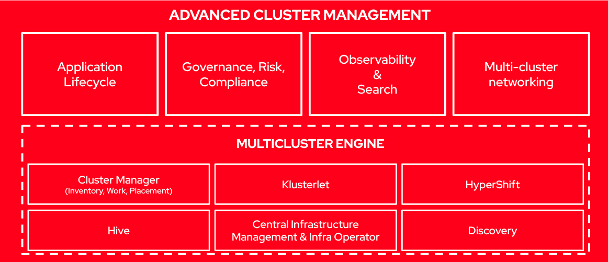

Hub Management Components
The deployment (ZTP), configuration, and lifecycle management solution is built by different independent components that work together to provide an automated workflow to provision and configure remote OpenShift clusters. In the following picture, we can see the different moving pieces involved:
-
A Git repository that declares the
ClusterInstanceresource, e.g., how the cluster is provisioned, and one or multiplePolicyGeneratorresources that define how the cluster is configured. This includes the operators that are going to be installed, the configuration to be applied, and the applications to be deployed. Note that a Git repository is a must in any GitOps methodology.
Since OpenShift 4.18, the SiteConfig resource managed by the SiteConfigGenerator kustomize plugin was replaced as the recommended method by the ClusterInstance resource managed by the SiteConfig Operator.
|
-
Red Hat Advanced Cluster Management installed on the hub cluster, at the heart of the architecture.
-
The Red Hat OpenShift GitOps operator allows building and integrating declarative Git-driven workflows. It is a key component and it is extended with the
policy-generatorkustomize plugin. Thesiteconfig-generatoris no longer needed as it is replaced by the SiteConfig Operator. -
The SiteConfig Operator enables users to deploy clusters using either the Assisted Installer or the Image Based Installation deployment flows through the ClusterInstance API. The IBI flow targets only Single Node OpenShift (SNO) clusters. The ClusterInstance CR will be rendered by the SiteConfig Operator as installation CRs.
-
The Assisted Service operator, now called Infrastructure operator, is a component of the Multicluster Engine Operator and is responsible for provisioning OpenShift clusters. It is part of the Assisted Installer deployment workflow.
-
The Topology Aware Lifecycle Manager (TALM) is responsible for managing the software lifecycle of the managed clusters.

| The ZTP workflow starts when the site is connected to the network and ends with the CNF workload deployed and running on the site nodes. |
Red Hat Advanced Cluster Management
Red Hat Advanced Cluster Management for Kubernetes (RHACM) provides the multicluster hub, a central management console for managing multiple Kubernetes-based clusters across data centers, public clouds, and private clouds. You can use the hub to create Red Hat OpenShift Container Platform clusters on selected providers, or import existing Kubernetes-based clusters. After the clusters are managed, you can set compliance requirements to ensure that the clusters maintain the specified security requirements. You can also deploy business applications across your clusters.
From ACM 2.5 on, there has been a major re-architecture in RHACM. Part of the functionality that was included has been moved to the Multicluster Engine (MCE), which is a required piece for RHACM. Actually, when installing RHACM, the MCE bits are also installed automatically.

Multicluster Engine
The Multicluster Engine for Kubernetes (MCE) operator is a software operator that enhances cluster fleet management. The Multicluster Engine for Kubernetes operator supports Red Hat OpenShift Container Platform and Kubernetes cluster lifecycle management across clouds and data centers. MCE provides the tools and capabilities to address common challenges that administrators and site reliability engineers face as they work across a range of environments, including multiple datacenters, private clouds, and public clouds that run Kubernetes clusters.
| The Multicluster Engine for Kubernetes operator is entitled with OpenShift. |
MCE provides most of the functionality to provision OpenShift clusters, since it includes the Assisted Installer operator, the Image Based Install Operator, SiteConfig Operator, Hive, and the management of the Klusterlet agents installed on the managed clusters.
SiteConfig Operator
The SiteConfig Operator introduces a unified ClusterInstance API, which is derived from the SiteConfig API from the SiteConfig Generator kustomize plugin. This API decouples parameters that define a cluster from the manner in which the cluster is deployed. This separation removed certain limitations that were presented by the SiteConfig kustomize plugin in the past.
Because of this decoupling, the SiteConfig Operator allows deploying OpenShift clusters using either the Assisted Installer or Image Based Installation flows depending on the user’s needs. See as well that the operator is the entry point for any GitOps ZTP deployment.
| In Single Node OpenShift Telco RAN environments the Image Based Installation deployment method is the preferred one due to the reduced installation times and the scalability requirements required in edge deployments. For Telco Core, ZTP provisions multi-node OpenShift (MNO) clusters using the Assisted Installer flow through the SiteConfig Operator. |
The SiteConfig Operator dynamically generates installation manifests based on user-defined cluster templates that are instantiated from the data in the ClusterInstance CR. You can source the ClusterInstance CR from your Git repository through ArgoCD, or manually on the hub cluster.
The SiteConfig Operator provides default cluster templates (ConfigMap-based templates on the hub) that you can use as-is or customize when defining ClusterInstance resources.
As shown in the picture, the process involves the following steps:
-
Use the operator’s default cluster templates on the hub cluster, or create customized ConfigMap Templates derived from them.
-
Create a ClusterInstance CR that references those cluster templates and supporting manifests.
-
After the resources are created, the SiteConfig Operator reconciles the ClusterInstance CR by populating the templated fields that are referenced in the CR.
-
The SiteConfig Operator validates and renders the installation manifests, then the Operator performs a dry run.
-
If the dry run is successful, the manifests are created, then the underlying Operators: Assisted Installer or the Image Based Install Operator, depending on the chosen deployment workflow, consume and process the manifests.
-
The installation begins.
-
The SiteConfig Operator continuously monitors for changes in the associated ClusterDeployment resource and updates the ClusterInstance CR’s status field accordingly.

Infrastructure Operator
The Infrastructure operator for Red Hat OpenShift, formerly known as Assisted Service operator, is responsible for managing the deployment of the Assisted Service. Assisted Service is used to orchestrate bare metal OpenShift installations. Basically, it is the piece that will help us to automatically provision OpenShift clusters in a declarative manner following the Assisted Installer flow.
A high overview of the basic flow is as follows. Note that in the solution presented in this lab these steps are automated and derive from the declarative configuration in Git which provides a "zero touch" deployment of clusters.
-
The SiteConfig Operator creates the installation custom resources (for example,
InfraEnvand host definitions) from theClusterInstanceCR. -
The Assisted Service registers the hosts and performs discovery (hardware inventory and connectivity).
-
For bare metal deployments managed from the hub, the Assisted Installer mounts the boot image on the nodes (via Ironic); there is no need to download or manually attach an ISO in the recommended ZTP flow.
-
After validations pass, the installation starts and progresses automatically.
The Assisted Service can currently install clusters with highly-available control planes (3 hosts and above) and can also install Single-Node OpenShift (SNO).
GitOps Operator
Red Hat OpenShift uses Argo CD to maintain cluster resources. Argo CD is an open-source declarative tool for the continuous integration and continuous deployment (CI/CD) of applications. So, in a ZTP workflow, Argo CD is responsible for pulling the custom resources definitions that are stored in a Git repository and applying them to the hub cluster. In the solution presented here, the definitions are applied into the hub cluster, where all the components described in this section are running. It is RHACM in charge of performing the necessary actions to the managed clusters and distributing those policies accordingly.
Argo CD can pull and apply any Kubernetes custom resource, however, for ZTP we are mainly focusing on ClusterInstance and PolicyGenerators manifests, but Argo CD is not restricted to them.
|
We have been talking during this lab about how a ClusterInstance manifest describes the way an OpenShift cluster is going to be provisioned, while one or multiple PolicyGenerators describe the configuration that will be applied to the provisioned cluster.
However, certainly, both are high-level manifests that are not understood by the hub cluster. There is something in between that will translate those high-level definitions into something that RHACM (including MCE) recognizes. We are referring to the SiteConfig Operator when deploying clusters and Policy generator kustomize plugin when configuring it.
While the SiteConfig Operator follows a classical operator installation, the Policy generator kustomize plugin is installed into the OpenShift GitOps operator during the initial setup/configuration of the hub cluster. Hub cluster preparation—including installing the policy-generator kustomize plugin—is covered in Configuring the hub cluster with ArgoCD. OpenShift GitOps loads the plugin (via an initContainer on the openshift-gitops-repo-server deployment) so that PolicyGenerator manifests pulled from Git are rendered into the RHACM custom resources the hub expects.
SiteGen
In OpenShift 4.18, the SiteConfig resource managed by the SiteConfigGenerator kustomize plugin was replaced as the recommended method by the ClusterInstance resource managed by the SiteConfig Operator.
|
PolicyGen
| OpenShift 4.16 has a new templating mechanism called Red Hat Advanced Cluster Management for Kubernetes (RHACM) Policy Generator that will eventually replace Policy Generator Template (PGT) as the standard way to generate Red Hat Advanced Cluster Management for Kubernetes policies. |
The policy generator kustomize plugin is used to facilitate creating RHACM policies based on a set of provided source CRs (custom resources) and PolicyGenerator CRs. Its primary goal is to convert reference Kubernetes manifest files into RHACM policies. Any deviations from the reference manifest, such as ethernet interface names, are captured in the patch section of the PolicyGenerator Custom Resource. The plugin helps to generate the following RHACM resources:
-
Policy.
-
PlacementRule.
-
PlacementBinding.
TALM operator
Topology Aware Lifecycle Manager operator is a Kubernetes operator that facilitates software lifecycle management of fleets of clusters. That includes platform, operator, and configuration updates. It uses Red Hat Advanced Cluster Management (RHACM) for performing changes on target clusters, in particular by using RHACM policies. TALM Operator uses the following CRDs:
-
ClusterGroupUpgrade.
-
ImageBasedGroupUpgrade.
TALM manages the deployment of Red Hat Advanced Cluster Management (RHACM) policies for one or more OpenShift Container Platform clusters. Using TALM in a large network of clusters allows the phased rollout of policies to the clusters in limited batches. This helps to minimize possible service disruptions when updating. With TALM, you can control the following actions:
-
The timing of the update.
-
The number of RHACM-managed clusters.
-
The subset of managed clusters to apply the policies to.
-
The update order of the clusters.
-
The set of policies remediated to the cluster.
-
The order of policies remediated to the cluster.
TALM supports the orchestration of the OpenShift Container Platform y-stream and z-stream updates, day-two operator y-stream and z-stream updates, and configuration updates.